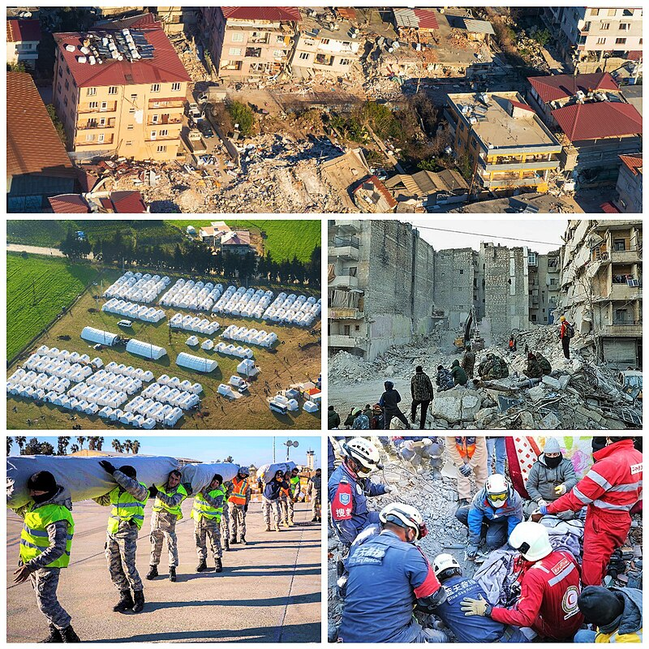
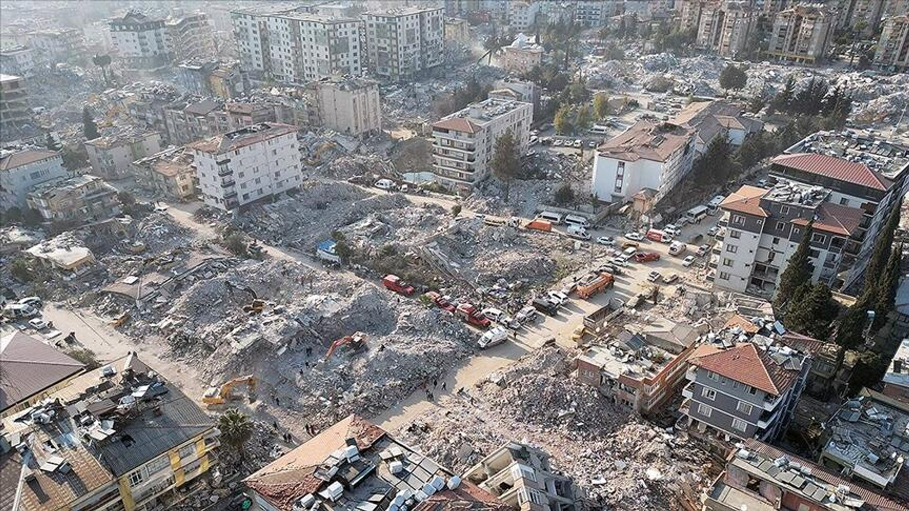

2023 Kahramanmaraş depremleri, 6 Şubat depremleri ya da 2023 Türkiye-Suriye depremleri, 6 Şubat 2023'te dokuz saat arayla meydana gelen, merkez üsleri sırasıyla Kahramanmaraş'ın Pazarcık ve Elbistan ilçeleri olan, 7,8 Mw ve 7,5 Mw büyüklüklerindeki iki deprem. Mercalli şiddet ölçeğine göre sarsıntıların şiddeti, ölçeğin en yüksek değeri olan XII (Afetsel) olarak saptandı. Depremler sonucunda Türkiye'de resmî rakamlara göre en az 53 bin 537, Suriye'de ise en az 8 bin 476 kişi hayatını kaybetti ve toplam 122 binden fazla kişi ise yaralandı. Depremlerin ardından büyüklüğü 6,7 Mw'e kadar varan 45 binden fazla artçı sarsıntı gerçekleşti.
Pazarcık merkezli ilk deprem, Türkiye ve Suriye'nin yanı sıra Lübnan, Kıbrıs, Irak, İsrail, Ürdün, İran ve Mısır'ın da yer aldığı geniş bir coğrafyada hissedildi. İki büyük deprem, yaklaşık 350.000 km2 (140.000 mil kare) alanda, Almanya'nın toplam yüz ölçümü kadar bir bölgede hasara yol açtı ve 14 milyon kişiyi etkiledi. Türkiye'de birçok tarihî yapı da dahil ilk gün 39 binden fazla bina yıkılırken, 11 ilde toplam 518 bin konut yıkıldı veya ağır hasar aldı. Ayrıca 128 bin 778 konut ise orta derecede hasar aldı. Afet sonrası 2 milyondan fazla kişi barınma sorunu yaşarken en az 5 milyon kişi farklı bölgelere göç etti. Uluslararası Çalışma Örgütü (ILO), depremler sonucu Türkiye'de 658 bin, Suriye'de ise 170 bin çalışanın geçim olanaklarını kaybettiğini duyurdu.
Türkiye hükûmeti, deprem bölgesi için doğal afet ve salgın gibi acil durumlarda uluslararası kuruluş ve ülkelerden yardım çağrılarını kapsayan en yüksek acil durum olan 4. seviye alarm ilan edildiğini açıklarken, Dünya Sağlık Örgütü, depremler için 3. seviye acil durum ilan etti. Ayrıca depremlerden etkilenen 10 ilde 3 ay süreyle olağanüstü hâl ilan edildi ve hayatını kaybedenler için Türkiye ve Kuzey Kıbrıs Türk Cumhuriyeti'nde yedi gün, Kosova, Arnavutluk, Kuzey Makedonya ve Bangladeş'te ise bir gün ulusal yas ilan edilmesine karar verildi. 102 ülke Türkiye'ye yardım teklifinde bulunurken 94 ülkeden gelen 141 binden fazla kişi arama kurtarma çalışmalarına dahil oldu. Onlarca ülke ilk yardım malzemesi, teçhizat, sağlık ekibi gönderdi ve taziye mesajları yayımladı. Ayrıca Ermenistan-Türkiye sınırı yardım sevkiyatı için otuz yıl aradan sonra ilk kez açıldı.
2023 Meclis Deprem Araştırma Komisyonu'nun raporuna göre depremlerin toplam maliyeti Türkiye'de 148.8 milyar $ oldu. Türkiye'nin 2023 gayrisafi yurt içi hasılasının %9'una denk gelen maddi zarar, 1999 Marmara depreminin yol açtığı maddi kaybın yaklaşık 6 katından fazla oldu. Dünya Bankası, depremlerin Suriye'ye doğrudan maliyetinin ise toplamda 5,1 milyar $ olduğunu duyurdu. İki ülkede toplam 153.9 milyar $ maddi zarara yol açan depremler, dünyada en çok maddi zarara sebep olan üçüncü deprem oldu.
Pazarcık'ta meydana gelen ilk deprem, 1668 Kuzey Anadolu depreminden sonra Anadolu topraklarında gerçekleşen en büyük ikinci deprem ve Türkiye Cumhuriyeti tarihinde kaydedilen en büyük deprem olarak kayıtlara geçti. Elbistan merkezli ikinci deprem ise Türkiye'de meydana gelen depremler arasında en büyük üçüncü deprem oldu. Deprem bölgesinde 400 km yüzey kırığı oluşurken, bölge 3 ila 9 metre batıya kaydı. Depremler, 1939 Erzincan depremini geride bırakarak Türkiye'de, 1822 Halep depremini geride bırakarak Suriye'de en ölümcül sarsıntılar olarak kaydedildi. Aynı zamanda, 300 binden fazla insanın öldüğü 2010 Haiti depreminden bu yana dünya çapındaki en ölümcül depremdir.

2 Şubat 2024 tarihinde İçişleri Bakanı Ali Yerlikaya tarafından depremde 53.537 kişinin öldüğünü açıkladı. 22 Nisan günü 12:40 itibarıyla İçişleri Bakanı Süleyman Soylu tarafından depremde 107.204 kişinin yaralandığı açıklandı. Deprem sebebiyle 120 polis, 32'nin üzerinde asker ve en az 14 doktorun öldüğü bildirildi. Aile ve Sosyal Hizmetler Bakanlığı tarafından 27 Nisan 2023 tarihinde yapılan açıklamada enkaz altından çıkarılmış refakatçisi olmayan çocuk sayısının 1.914 olduğu ve bunlardan 1.812'sinin ailesine teslim edildiği belirtildi.
